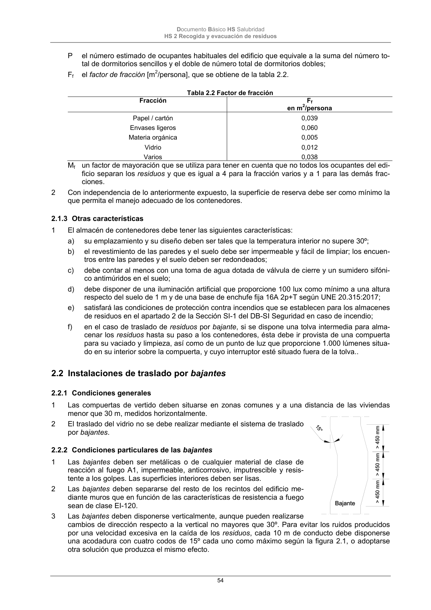

DB-HS Salubridad · edición 2022-06-14 · capa oficial
Documento DB-HS-oficial · SHA-256 del PDF 68df3caacc95f71aee2ec1ba7b2c65ae66155c21e3a8785521b8fdd4fd640d3b
Página física 54 de 184.
Copia fiel del PDF fuente · Fuente oficial
Ficha de la disposición en la fuente oficial
Formato: Texto de la página (Markdown)
Documento Básico HS Salubridad HS 2 Recogida y evacuación de residuos 54 P el número estimado de ocupantes habituales del edificio que equivale a la suma del número to- tal de dormitorios sencillos y el doble de número total de dormitorios dobles; Ff el factor de fracción [m2/persona], que se obtiene de la tabla 2.2. Tabla 2.2 Factor de fracción Fracción Ff en m2/persona Papel / cartón Envases ligeros Materia orgánica Vidrio Varios 0,039 0,060 0,005 0,012 0,038 Mf un factor de mayoración que se utiliza para tener en cuenta que no todos los ocupantes del edi- ficio separan los residuos y que es igual a 4 para la fracción varios y a 1 para las demás frac- ciones. 2 Con independencia de lo anteriormente expuesto, la superficie de reserva debe ser como mínimo la que permita el manejo adecuado de los contenedores. 2.1.3 Otras características 1 El almacén de contenedores debe tener las siguientes características: a) su emplazamiento y su diseño deben ser tales que la temperatura interior no supere 30º; b) el revestimiento de las paredes y el suelo debe ser impermeable y fácil de limpiar; los encuen- tros entre las paredes y el suelo deben ser redondeados; c) debe contar al menos con una toma de agua dotada de válvula de cierre y un sumidero sifóni- co antimúridos en el suelo; d) debe disponer de una iluminación artificial que proporcione 100 lux como mínimo a una altura respecto del suelo de 1 m y de una base de enchufe fija 16A 2p+T según UNE 20.315:2017; e) satisfará las condiciones de protección contra incendios que se establecen para los almacenes de residuos en el apartado 2 de la Sección SI-1 del DB-SI Seguridad en caso de incendio; f) en el caso de traslado de residuos por bajante, si se dispone una tolva intermedia para alma- cenar los residuos hasta su paso a los contenedores, ésta debe ir provista de una compuerta para su vaciado y limpieza, así como de un punto de luz que proporcione 1.000 lúmenes situa- do en su interior sobre la compuerta, y cuyo interruptor esté situado fuera de la tolva.. 2.2 Instalaciones de traslado por bajantes 2.2.1 Condiciones generales 1 Las compuertas de vertido deben situarse en zonas comunes y a una distancia de las viviendas menor que 30 m, medidos horizontalmente. 2 El traslado del vidrio no se debe realizar mediante el sistema de traslado por bajantes. 2.2.2 Condiciones particulares de las bajantes 1 Las bajantes deben ser metálicas o de cualquier material de clase de reacción al fuego A1, impermeable, anticorrosivo, imputrescible y resis- tente a los golpes. Las superficies interiores deben ser lisas. 2 Las bajantes deben separarse del resto de los recintos del edificio me- diante muros que en función de las características de resistencia a fuego sean de clase EI-120. 3 Las bajantes deben disponerse verticalmente, aunque pueden realizarse cambios de dirección respecto a la vertical no mayores que 30º. Para evitar los ruidos producidos por una velocidad excesiva en la caída de los residuos, cada 10 m de conducto debe disponerse una acodadura con cuatro codos de 15º cada uno como máximo según la figura 2.1, o adoptarse otra solución que produzca el mismo efecto.

Datos candidatos: compruebe celdas y notas en el PDF.